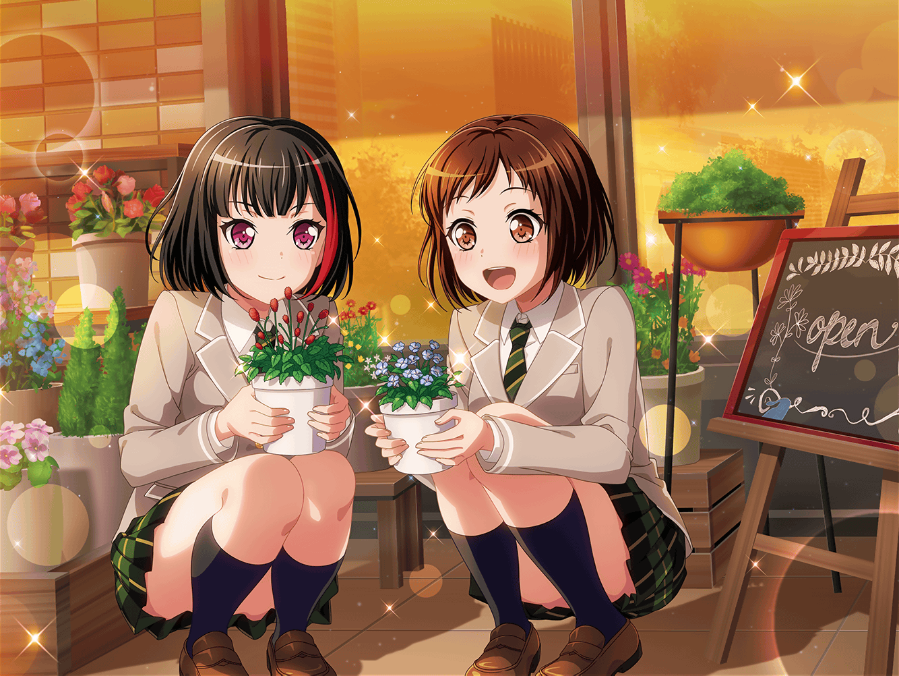

羽沢珈琲店
つぐみ
蘭ちゃん、お待たせー。
はい、レモンティーね
蘭
ありがと
つぐみ
今日はまだお客さん来てないから、気楽にしてね。
あ、あとこれ、ガトーショコラ。
どうぞ、食べてみて
蘭
つぐみ、そんなに気を使わないでいいよ。
売り物でしょ？
つぐみ
蘭ちゃんが来るからって、お母さんが張り切って作ったんだよ。
だから遠慮しないで
つぐみ
ビターチョコを使ってるから、そんなに甘くないし
たぶん蘭ちゃんの口にも合うと思うよ
蘭
昨日、電話で言ってた見てほしいものって、もしかしてこれ？
つぐみ
あ、それは違うの。
見てほしいものはこっちにあるんだ
つぐみ
昨日、１日かけて作ってみたの。
はい、これ！
フラワーアレンジメントなんだけど……
蘭
え？
これ、つぐみがまとめたの？
つぐみ
一応、私なりにやってみたんだけど……
どうかな？
蘭
あ、この器に使ってるのって……この前の流木だよね？
つぐみ
そう！ 気づいてくれた！？
前に井ノ島で拾ってきたやつだよ！
蘭ちゃんと一緒に下処理したやつ
蘭
この花は、どこに飾るか決めてるの？
置く場所によっても全然印象違うから
つぐみ
お店のカウンターに飾ろうと思ってるんだけど……
ヘンなところとかあったら遠慮なく言ってね
蘭
ううん、全然ヘンじゃないよ。
お店の雰囲気ともあってるし……悪くないと思う
つぐみ
ホントに！？ ホントに悪くない！？
蘭
ホントだってば
つぐみ
良かった～、ホッとしたよ～……
蘭ちゃんに見せるの、すっごい緊張するなあ……
蘭ちゃん、お花の専門家だし
蘭
専門家とか……そんなんじゃないよ。
それに、フラワーアレンジメントは
あたしもそんなに詳しくないし
つぐみ
ううん！ 蘭ちゃんはいっつもお花に囲まれてるでしょ？
そういう人に見てもらうってだけで、やっぱり全然違うから
蘭
けど……
つぐみがフラワーアレンジメントを始めたなんて、
全然知らなかった
つぐみ
最初は生け花も考えたんだけど、ちょっと難しそうで……
昨日、商店街のお花屋さんにいろいろ教えてもらいながら
やってみたんだ！
蘭
そうだったんだ。
けど初めてとは思えないよ。
このワレモコウがいいアクセントになってると思う
つぐみ
ほんと！？ やったっ。
このワレモコウだけは、絶対に入れたいって思ってたの。
蘭ちゃんが好きなお花って言ってたし……
蘭
覚えててくれたんだ？
つぐみ
覚えてるに決まってるよ！
それに私もお花を触ってたら、あの時の歌詞の意味が
ちょっとはわかるようになるかなって思ってたんだ
蘭
あの時の歌詞って……
つぐみ
もちろん蘭ちゃんが一番最初にくれた歌詞！
私、ちゃんとスマホにメモしてあるんだよ
蘭
あの歌詞は、うまくいかなかったやつだから……
つぐみ
ううん！
蘭ちゃんが感じたことを私も感じてみたいって思ったの
つぐみ
けど、やってみてホントに良かったな。
昨日一日、お花を見てたらね、
なんとなくだけど、気づいたことがあって
蘭
気づいたこと？
つぐみ
例えばこの『花咲き散り、また巡る』の部分だけど――
つぐみ
巴ちゃんはこの歌詞を寂しい印象って言ってたでしょ？
それはたぶん、花が散ることを想像して、
その景色が寂しいって思ったからなのかな？ って
つぐみ
逆に私は、同じ歌詞に前向きな印象を持ったんだけど、
それは『また巡る』って言葉に
希望みたいなものを感じたからなんだ
蘭
希望……そう、なのかな？
ごめん。あたしもうまく言葉にできなくて
つぐみ
ううん。これは、私が思ったことだから。
昨日、歌詞を思い浮かべながらお花を触ってたら
ふと思ったんだ……
つぐみ
花にとって、咲いて、散って、また芽吹くことって、
当たり前のことなのかもな、って
蘭
当たり前の、こと……？
つぐみ
うん。花は散ることを悲しんでるわけじゃないし、
再び芽吹くことを夢見ているわけでもない。
花にとって当たり前のこと
つぐみ
お花って、そういうものだもんね。
咲いて、散って、また芽吹く。
それがお花にとっての『いつも通り』
つぐみ
私達は、その『いつも通り』に特別な意味を
持たせすぎちゃってたのかも、って
つぐみ
だから、蘭ちゃんにとっては当たり前のことを当たり前に
歌詞にしたんだけど、私達はそれをややこしく
考えすぎちゃったのかもなって思ったんだ
蘭
花にとっての、『いつも通り』……か
つぐみ
ち、違ったらゴメンね！
蘭
ううん……違わない、と思う。
ていうか、今つぐみが言葉にしてくれて、気づいたよ
蘭
……あたしが歌いたかったのは
やっぱり『いつも通り』だったんだ。
今までそれがうまく言葉にできなかったけど……今わかった
つぐみ
ホントに！？ 良かった～
蘭
ていうか、こっちこそありがと。
なんか、すごくスッキリした気がする
つぐみ
そんな当たり前のことに気づけたのは、
蘭ちゃんと、このお花のおかげだね！
蘭
だから、別にあたしはなんにもしてないってば……
つぐみ
ふふ。
これからもお花のこともっともっと教えてくれると嬉しいな！
お願いね、蘭ちゃん！